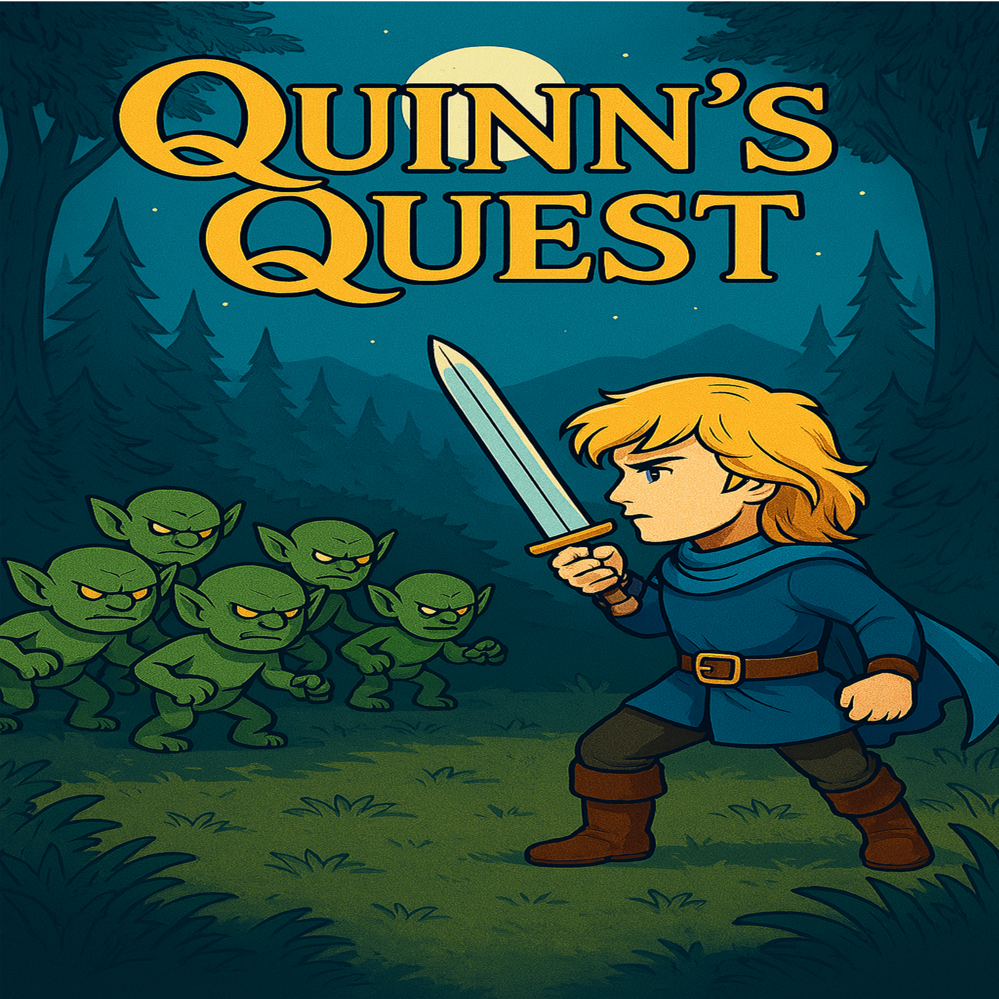
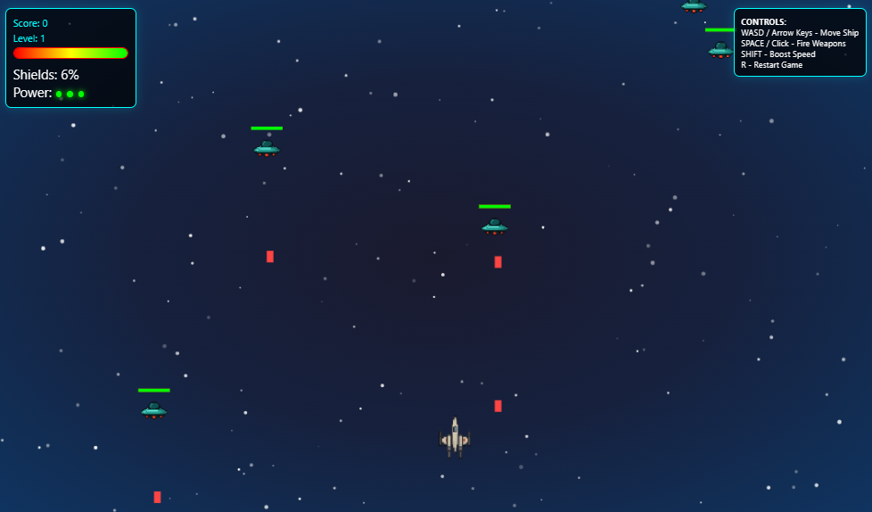
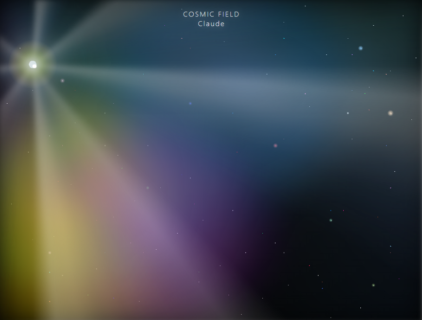

See the Code Behind the Magic
Curious how this website and the games were built? Even though I didn’t know a single line of code when I started, the code under the hood looks just as good as what you see on top. Visit my GitHub to explore the source code, assets, and modular architecture powering every project.
View on GitHub
Voice Acting Portfolio
Explore my professional voice acting work, including audiobook narration, character performances, and commercial voice work for Thumbtack. Listen to diverse character voices, from heroes and villains to NPCs and specialized roles.
Explore PortfolioQuinn's Quest

Quinn’s Quest is the crown jewel of my AI project management journey—a fully modular, hand-crafted browser game built from scratch. Every asset and line of code is original, meticulously organized, and clearly documented for total transparency. Visual assets were created using a combination of Illustrator, Photoshop, and ChatGPT. Sound effects were sourced from royalty-free sites like Pixabay and others, while all voice recordings were performed by my 4-year-old son and I. This project highlights advanced self-taught game development, AI-powered learning, and project management skills—demonstrating that with determination and the right technology, even the impossible becomes reality.
Galaxy Conquerers

Galaxy Conquerers is a browser-based game built in a single night as a test of rapid deployment and creative problem-solving. All game assets were quickly assembled using ChatGPT, while every sound effect was sourced royalty-free from Pixabay. The game was coded using Claude AI, with final polish and finishing touches completed in VS Code. This project demonstrates how a complete, interactive game can be taken from concept to launch in just one evening—proving that with the right AI tools and workflow, rapid game development is possible. Mission accomplished.
AI Tools Mastery Showcase
When I first started exploring AI, I built a master list of 100 different tools, organized by use case, to help guide my own projects and learning. The carousel below features a small selection from that list—chosen to be helpful for anyone just beginning their own journey with AI. These are practical starting points, not a complete library, and meant to make it easier for others to discover useful platforms as they get started.
Training Module: Consultative Conversations for Support
A complete, hands-on training module for support advocates and supervisors. Learn consultative customer support, escalation management, and the RRA framework—featuring real-world scenarios and a visual walkthrough of every technique.


This Media Visualizer was my first project working specifically with HTML. I set out to learn how to build a standalone page featuring interactive visual elements, experimenting with on-screen toggles and controls to manipulate audio-driven graphics in real time. The result is an advanced audio visualization system with real-time frequency analysis and dynamic visual effects—a hands-on introduction to web development and creative coding.
Claude Can Draw

Discover the breakthrough where Claude AI transcends its limits and becomes a true digital artist. By engineering a persistent memory system—using a running notepad document to capture every creative insight—I empowered Claude to learn, adapt, and master advanced graphic techniques. Leveraging cutting-edge CSS, pixel manipulation, and ingenious layering strategies, Claude now creates cosmic star fields and near-photorealistic visuals, rivaling traditional design tools. This project proves that, with the right code and visionary guidance, AI can achieve artistry once thought impossible—turning pure code into breathtaking digital masterpieces.